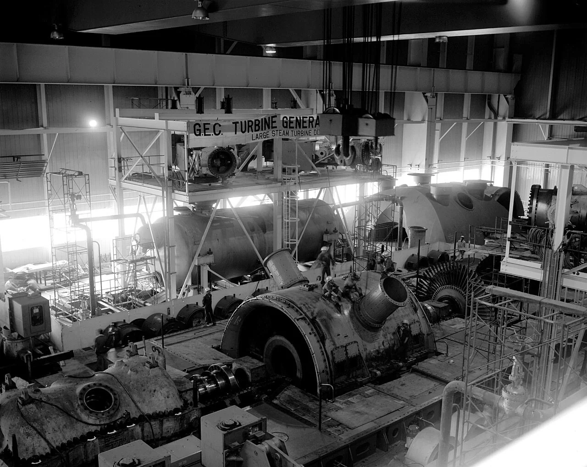
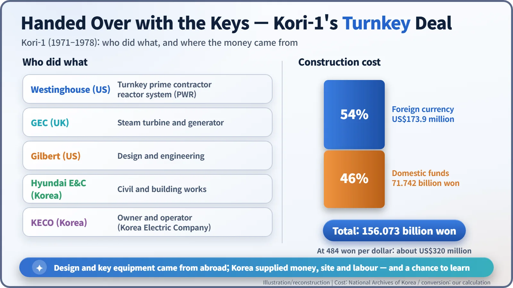
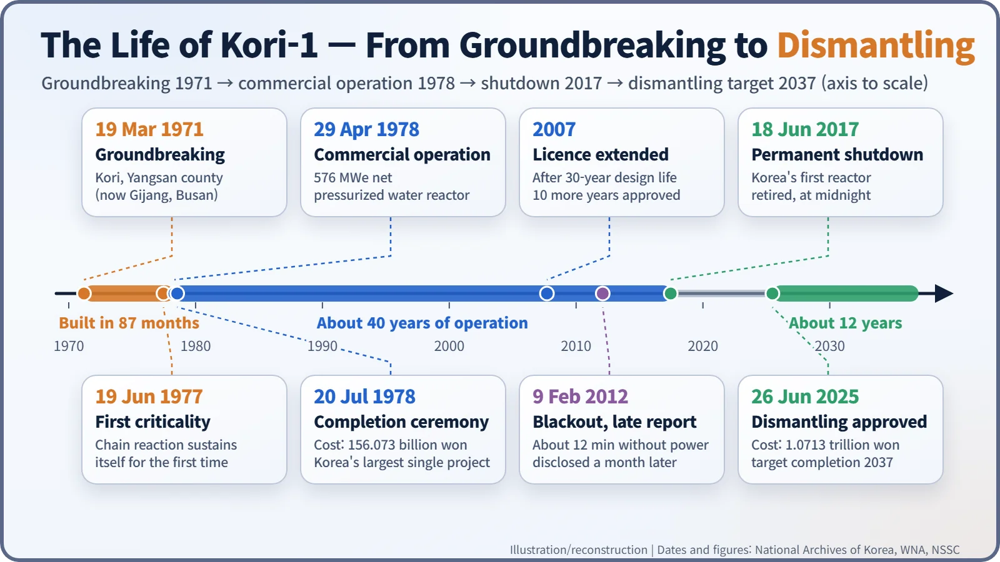
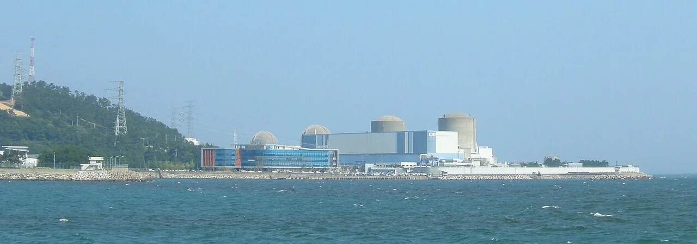

Nuclear History · 265
A $300 Million Switch-On — Kori-1, South Korea's First Nuclear Power Plant (1978)
Built with borrowed technology for about US$320 million, Korea's first nuclear plant went on to show the country the whole cycle, from construction to dismantling.
South Korea's first nuclear power plant, Kori Unit 1, was built on the south-east coast under a Westinghouse turnkey contract between 1971 and 1978 at a cost of 156 billion won (about US$320 million). It reached criticality on 19 June 1977 and began commercial operation on 29 April 1978. Forty years later it became the country's first reactor to be permanently shut down, and in 2025 its dismantling was approved.
A photograph full of other people's name tags
Start with a black-and-white photograph. It is 14 June 1976, inside a vast turbine hall on the coast of Yangsan county in south-eastern Korea (today part of Gijang, Busan). A half-assembled turbine fills the floor, and from the steelwork above hangs an English banner: "G.E.C. TURBINE GENERATORS." That is a British company. The reactor came from an American company, and the design and engineering from another American firm. South Korea's first nuclear power plant, Kori Unit 1, was going up covered in other people's name tags.

Sixteen years from research reactor to power plant
Korea's first steps in nuclear energy came in the late 1950s. It passed an Atomic Energy Law in 1958, set up the Office of Atomic Energy the following year, and in 1962 its first research reactor reached criticality. A research reactor is a laboratory tool, though; it does not make electricity. [3]
Planning for a power plant began that same year. In November 1962 a nuclear power committee was formed within the Office of Atomic Energy; a government review committee followed in December 1965, and a Nuclear Power Promotion Committee in February 1968. The economy was growing fast, factories were multiplying, and electricity demand was climbing every year. [2]
A plant you just unlock: the "turnkey" deal
The problem was know-how. Nobody in Korea had designed a nuclear plant, and no Korean company had built one. So the country chose a turnkey contract: one foreign prime contractor takes responsibility for everything from design to start-up, and the owner, in effect, is handed the keys. [3]
The prime contractor was Westinghouse, and the reactor was its pressurized water reactor (PWR). A PWR keeps the water inside the reactor under very high pressure, so it can be heated to nearly 300 °C without boiling. That hot water then boils water in a separate circuit, and the steam drives the turbine. Think of a pressure cooker scaled up enormously. The turbine generator came from Britain's GEC, design and engineering from the American firm Gilbert, and Hyundai Engineering & Construction joined the building work, its first experience of nuclear construction. [6]

87 months and 156 billion won
The groundbreaking ceremony took place at the Kori site on 19 March 1971, attended by President Park Chung-hee. The IAEA's reactor database records the start of construction as 1 August 1972, when main work on the reactor building began, so it pays to check which "start" a source means. Midway through construction, the 1973 oil crisis made the project look more important than ever. [1] [6]
According to the National Archives of Korea, construction cost US$173.9 million in foreign currency plus 71.742 billion won in domestic funds, a total of 156.073 billion won. It was Korea's largest single project at the time. At the fixed exchange rate of the day (484 won to the dollar), that is about US$320 million, which is where the "$300 million" in our headline comes from (our conversion). [1]
On 19 June 1977 the reactor reached criticality: for the first time, the fission chain reaction kept itself going. In late June the plant first sent electricity into the grid. After test operation, Kori-1 entered commercial operation on 29 April 1978. Its installed capacity was 587,000 kW; its net output, the power actually sent out, was 576 MW. Korean sources commonly describe this as making South Korea the world's 21st country with nuclear power. Counting from the groundbreaking, the job took 87 months, and the completion ceremony followed on 20 July 1978. Some records call 29 April the "completion" date; the start of commercial operation and the ceremony were separate days. [1] [2] [3]

The first plant kept going first
Kori-1 was the starting line. By the early 1980s eight reactors were under construction in South Korea at the same time, and the experience of building to someone else's blueprint became the foundation for the country's later push for technological self-reliance. [3]
The plant also kept collecting "firsts". When its 30-year design life ran out in 2007, a six-month upgrade and inspection outage led to approval for ten more years of operation, the country's first life extension. On 9 February 2012, during a maintenance outage, off-site power was lost and an emergency diesel generator failed to start, leaving the whole station without power for about 12 minutes. There was no radiological impact, but the event went unreported for more than a month and came to light only in March. The head of the operating company resigned, and the IAEA reviewed the plant's safety culture. The lesson: an organisation's honesty is part of safety, just like its machines. [3] [4] [5]
At midnight on 18 June 2017, Kori-1 became the first reactor in South Korea to be permanently shut down. On 26 June 2025 the Nuclear Safety and Security Commission approved its dismantling: about 12 years of work and 1.0713 trillion won, with completion targeted for 2037. One task remains open: moving the spent fuel from its storage pool to a dry storage facility on the site. [3]

Built with borrowed technology, Korea's first nuclear plant took the country through the whole cycle (building, operating, extending and now dismantling) for the first time. The $300 million bought more than electricity.